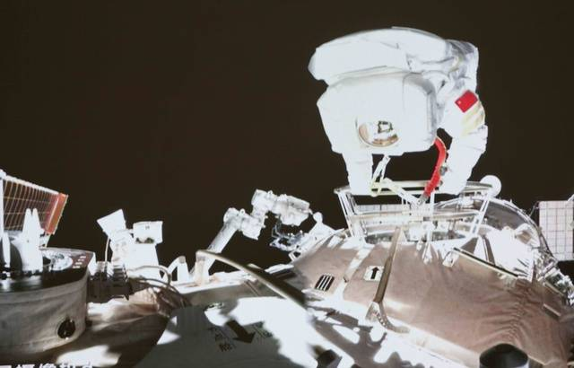

Mission Shenzhou-13: Wang Yaping, première astronaute chinoise à effectuer une sortie dans l'espace

La Chine continue d’envoyer des signes de sa volonté d’être une Nation qui compte dans la conquête spatiale. L’astronaute Wang Yaping est devenue lundi la première Chinoise à avoir effectué une sortie dans l’espace, laquelle avait pour but de poursuivre la construction de la station spatiale du géant asiatique.
Cette sortie avait pour but d'installer de nouveaux éléments d'un bras robotique exterieur, de s'assurer de la fiabilité des equipements ou encore de tester des combinaisons spatiale de nouvelle génération.
08/11/21 à 05h22